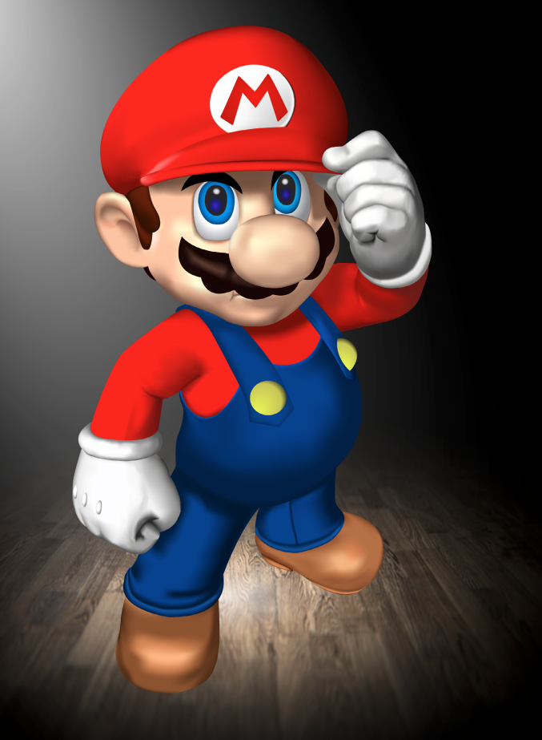
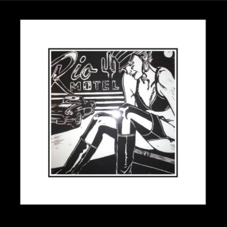
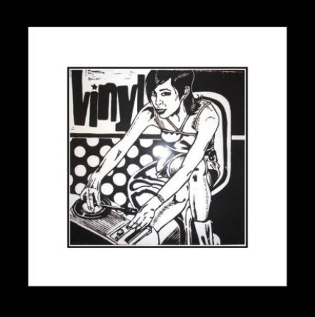

Digital
I created these vector images using Adobe Illustrator while studying Multi-Media Design at Raffles - College of Design - Sydney.
Sculpting
I'm a self-taught sculpter and prosthetic designer. I learned the art of prosthetics via online research and by watching some free online video tutorials.


Wood-Craft
These are some of my wood-work projects that I designed and built. I hold a strong interest in lighting design and I often encorporate this into the designs of my personal projects where I see fit.


Lyno Art
I began to explore my creative side in 2007. These lyno prints were my first pieces of art that I made.
 